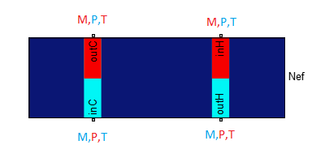

1.9 Cross current exchanger 

a. Description
This component is a two flows cross current heat Exchanger.
It allows you to cool high pressure gas.
This exchanger is a plate heat exchanger.
For the modelling of this component we have made the following
hypothesis :
- Only one spatial coordinate is considered,
in the direction of the flow
- Pressure will be linearly decreasing in the direction
of the flow
- The walls of he exchanger are considered as adiabatic
- The longitudinal thermal conductivity is null
- Only one state variable is considered by ram
The following variables are imposed to others components:
- Hot inlet port : flow rate
- Hot outlet port : both pressure and temperature
- Cold inlet port : both temperature and flow rate
- Cold outlet port : pressure
To ensure compilation, you must connect the heat Exchanger
to components that impose:
- Both pressure and temperature on the hot inlet port
- Flow rate on the hot outlet port
- Pressure on the cold inlet port
- Both temperature and flow rate on the cold outlet port
Note : the T/M/P initial conditions should be equal to
the actual value on the scheme
(especially for heat exchanger connected to sources).
Parameters Vh, Vc, M, Kh, Kc parameter must be positive
©2015 The PI-02